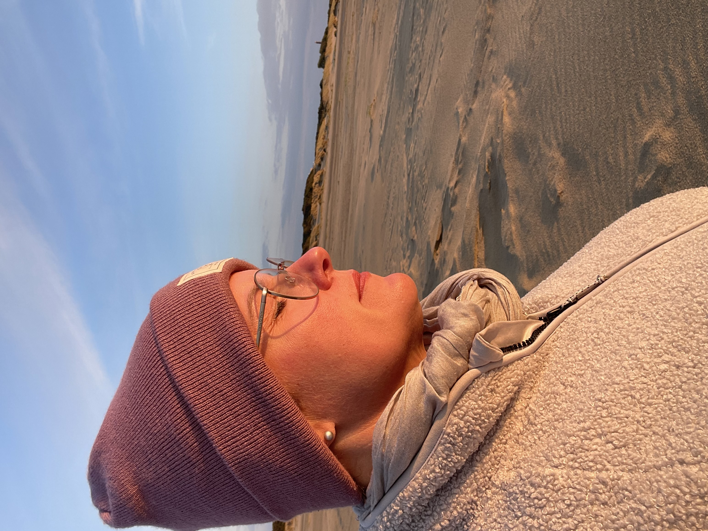

Göttinnen-Haut · Kristin Schnödt
Dein Klarheitsgespräch.
60 Minuten. Ganzheitlich. Haut, Stress und Ernährung.
Für die Frau, die aufgehört hat zu hoffen – und trotzdem hier ist.
Du hast schon alles probiert.
Und trotzdem reagiert deine Haut.
Eine Creme nach der anderen gekauft und probiert und gewartet, dass Besserung eintritt. Auf Arzttermine sehnlichst gewartet, doch dieser war ernüchternd. Cortison, das kurzfristig hilft und dann wieder nicht. Und dann das Gefühl, mit diesem Thema komplett allein gelassen zu werden.
Du weißt, dass da mehr dahinterstecken muss. Stress, Ernährung und das Nervensystem. Aber niemand schaut sich das Ganze an.
„Ich kenne diesen Weg. Ich bin ihn selbst gegangen."
Genau deshalb gibt es diese Zeit für dich. Nicht noch ein Produkt oder noch eine Routine. Sondern jemanden, der deine Haut ganzheitlich anschaut – und der das aus eigener Erfahrung versteht.
In diesen 60 Minuten steht deine Haut im Mittelpunkt.
Was in deinem Klarheitsgespräch passiert
1:1
persönlich mit Kristin
3
Ebenen: Haut · Psyche · Ernährung
Das bekommst du aus deinem Klarheitsgespräch
-
1
Deine Haut wird wirklich gesehen
Wir schauen gemeinsam, was deine Haut dir zeigt – und was dahintersteckt.
-
2
Deine persönliche Routine – so einfach wie möglich
Keine langen Prozeduren. Wenige, milde, reizarme Schritte, die wirklich zu dir passen.
-
3
Das Dahinter: Stress und Ernährung
Wir schauen, was dein Nervensystem und deine Ernährung mit deiner Haut machen – und welche ersten Schritte sofort helfen können.
-
4
Konkrete nächste Schritte
Du gehst mit einem klaren Plan raus. Kein Überblick, der dich überfordert. Sondern das Wichtigste als nächster Schritt.
-
5
Schriftliche Zusammenfassung danach
Alles Besprochene noch einmal kompakt, damit du es in Ruhe nachlesen kannst.
Ich bin Kosmetikerin, keine Ärztin. Was ich teile, ist kosmetische Pflege und persönliche Erfahrung. Es ist keine medizinische Diagnose oder Therapie und ersetzt keinen Arztbesuch.
Für wen dein Klarheitsgespräch ist
Dein Klarheitsgespräch ist für dich, wenn …
- du Neurodermitis-Erfahrung hast oder mit sehr sensibler, gestresster, gereizter Haut lebst
- du schon vieles probiert hast und das Gefühl hast, nichts hält wirklich
- du spürst, dass Stress, Schlaf oder Ernährung irgendetwas mit deiner Haut machen – aber nicht weißt was
- du aufgehört hast, dich im Spiegel wohlzufühlen – und das wieder ändern willst
- du bereit bist, nicht nur das nächste Produkt zu kaufen, sondern deine Haut wirklich zu verstehen
Nicht die Richtige für dich, wenn …
du eine schnelle Sofort-Lösung suchst, nicht bereit bist, kleine Veränderungen in deinen Alltag zu integrieren, oder eine medizinische Diagnose oder Therapie erwartest. Dann empfehle ich dir offen eine Dermatologin.
Warum ich das verstehe
Aus eigener Erfahrung, nicht aus dem Lehrbuch
Meine Geschichte
Sommer 2023, mit 44, tauchten bei mir plötzlich rote Flecken um Hals, Augen und Gesicht auf. Ich bin Kosmetikerin. Und ich habe mich für meine eigene Haut geschämt.
Was folgte, war eine Odyssee: vier Ärzte, immer nur Cortison, eine private Praxis, die mir ohne echten Befund viel Geld kostete. Cortison hat meine Haut kurzfristig ruhiggestellt. Aufatmen ließ sie etwas ganz anderes.
„3 Wochen Nordsee haben mehr für meine Haut getan als jede Creme davor."
Nach einer Reha an der Nordsee verstand ich, was wirklich den Unterschied macht: Ruhe, Bewegung, Ernährung und das Nervensystem.
Genau das bringe ich jetzt in jedes Klarheitsgespräch mit. 20 Jahre Kosmetikerin, eigene Neurodermitis-Erfahrung, meine Produktlinie PURVIDUAL – und das Wissen, was hinter der Haut steckt.

Was andere Frauen sagen
„Nach knapp einem Jahr: Die trockenen Stellen sind nahezu komplett verschwunden, die Pickel extrem selten, die Haut weniger rot, und ich bekomme Komplimente, dass ich frischer ausschaue."
Angelika W., 60 · PURVIDUAL Pflegeserie
„Da ich seit Jahren unter perioraler Dermatitis leide, war ich anfangs sehr vorsichtig. Kristin hat mich sanft herangeführt. Meine Haut ist gut wie nie."
Katharina D. · skeptisch → überzeugt
„Mein Hautbild hat sich um 100 Prozent verbessert. Feuchtigkeit, feineres Hautbild, super Ausstrahlung, die ich auch von meinem Umfeld immer wieder höre."
Monika R., 59 · PURVIDUAL + Behandlung
„Durch die richtige Pflege haben sich Rötungen und Spannungen so gut wie aufgelöst, die Poren sind feiner."
Claudia W. · gerötete, trockene Haut
Dein Klarheitsgespräch
60 Minuten, die
wirklich etwas verändern
- 60 Minuten 1:1 mit Kristin via Video-Call
- Ganzheitlicher Blick: Haut, Psyche und Ernährung
- Deine individuelle Pflegeroutine (clean, reizarm)
- PURVIDUAL-Empfehlung auf deine Haut abgestimmt
- Schriftliche Zusammenfassung danach
Jetzt buchen
Nach deiner Buchung erhältst du alle Details direkt per E-Mail.
So läuft es ab
Du buchst deinen Termin
Du wählst direkt einen Wunschtermin, der zu dir passt.
Du bekommst eine Bestätigung
Alle Details und den Video-Call-Link kommen direkt per E-Mail zu dir.
Du schickst mir vorab ein paar Infos
Was deine Haut beschäftigt, was du schon probiert hast – damit wir die 60 Minuten wirklich nutzen können.
Dein Klarheitsgespräch
Wir schauen gemeinsam auf deine Haut, dein Nervensystem und deine Ernährung. Du stellst alle Fragen, die du schon immer loswerden wolltest.
Deine Zusammenfassung
Innerhalb von 48 Stunden bekommst du alles Besprochene schriftlich – deine persönliche Routine, Empfehlungen und nächste Schritte.
Häufige Fragen
- Ist das eine medizinische Beratung?
- Nein. Ich bin Kosmetikerin, keine Ärztin. Was ich teile, ist kosmetische Pflege und meine persönliche Erfahrung. Dein Klarheitsgespräch ersetzt keinen Arztbesuch. Wenn du eine medizinische Diagnose brauchst, empfehle ich dir eine Dermatologin.
- Ich habe keine Neurodermitis-Diagnose – ist dein Klarheitsgespräch trotzdem für mich?
- Ja. Wenn du mit sensibler, gestresster, gereizter oder roter Haut lebst und das Gefühl hast, dass nichts wirklich hilft, ist dein Klarheitsgespräch genau richtig. Du brauchst keine Diagnose.
- Muss ich PURVIDUAL-Produkte kaufen?
- Nein. Ich mache dir eine Empfehlung, wenn es passt – aber es gibt keine Verpflichtung. Dein Klarheitsgespräch hat für dich Wert, unabhängig davon, welche Produkte du danach verwendest.
- Was, wenn ich einen Termin verschieben muss?
- Kein Problem. Du kannst deinen Termin bis 24 Stunden vorher verschieben.
- Kann ich nach dem Klarheitsgespräch weiter mit dir arbeiten?
- Ja. Nach deinem Klarheitsgespräch kannst du entscheiden, ob du tiefer gehen möchtest. Ich stelle dir dann gerne vor, wie eine längere Begleitung aussehen kann.